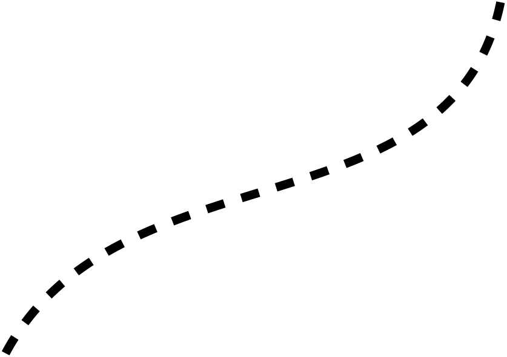

Pour cette fabuleuse aventure rêvée depuis 2014, initiée en 2017 j’ai besoin de vous tous pour finir de la concrétiser. Que vous soyez famille, amis, collègues, sponsors techniques ou financiers, que votre contribution soit généreuse ou plus modeste, je vous promets au travers de ce site de vous informer, de vous remercier, de vous faire rêver, de vous faire rire, de ne pas vous faire trop peur…. Alors n’hésitez pas à me suivre
- - > Page Facebook
BENOIT
- GANIVET
- GANIVET
QUI SUIS-JE ?
Benoit Ganivet 42 ans déjà, normand depuis toujours, assistant social depuis 20 ans, marié avec Anne-Caroline depuis 17 ans, père de 4 enfants de 13 ans à 9 ans, une envie de voyager autrement, des idées qui fourmillent et s’entrechoquent pour aboutir à la conception d’un camping bike pour participer à la plus folle course de vélo électro solaire …..
- THE
SUN TRIP
SUN TRIP
MON IDÉE
En 2014, je découvre par hasard le film sur la première édition du Sun Trip. C’est une révélation j’ai envie d’y participer un jour. En 2015, je croise fortuitement deux concurrents à l’entrainement sur les routes normandes. Cette course me fait des clins d’œil…. En mai 2017, l’idée du camping-bike surgit.
DE L'IDÉE -
À LA MODÉLISATION
À LA MODÉLISATION
pour cela, j’ai sollicité l’IUT à Alençon (Génie Mécanique et Productique) en juin 2017 et dés la rentrée 4 étudiants se positionnaient et c’est des rencontres régulières et des échanges avec eux que les plans sont sortis. Merci à Lucas, Dimitri, Victor et Alexandre.
UN SITE
- INTERNET
- INTERNET
Pour relater cette belle aventure. Pour offrir une belle vitrine à tous ceux qui m’aident. Personnalisé, facilement maintenable pour moi et consultable sur tous les écrans. Une belle rencontre avec Agnés, Etienne et Gaetan de la WILD CODE SCHOOL (école de codeurs) à La Loupe permet cela. Merci
DE LA MODELISATION
- A LA REALISATION
- A LA REALISATION
Les plans sont chauds mais cela ne construit pas le vélo. Pour souder le cadre en alu, mes pensées vont immédiatement vers Maël, touche à tout talentueux qui, il y a dix ans, a fabriqué un théâtre démontable et transportable alors un cadre même singulier de vélo….
Pour la cellule de vie, des contacts fructueux avec l’AFPA de Caen aboutissent à sa fabrication par des stagiaires pour une livraison en mars 2019 non pas en carbone ou fibres de verre mais en fibres de lin de Normandie à partir d’une maquette réalisée par un ami ébéniste, Stéphane.
LE RESTE EST À VENIR